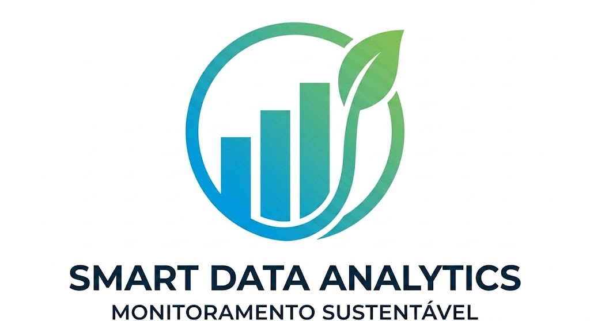
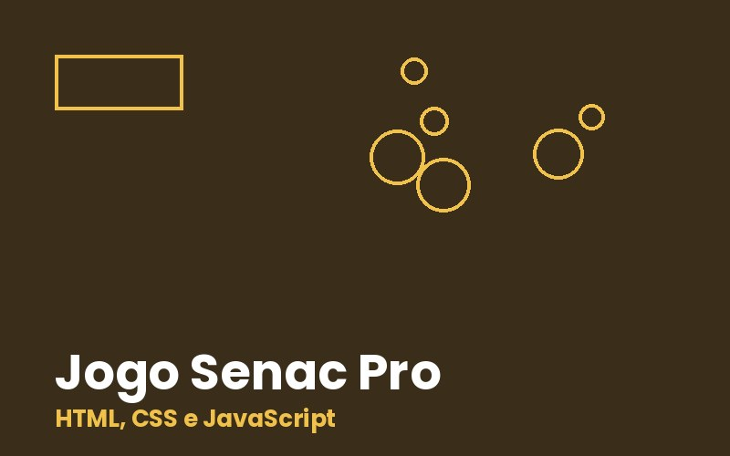
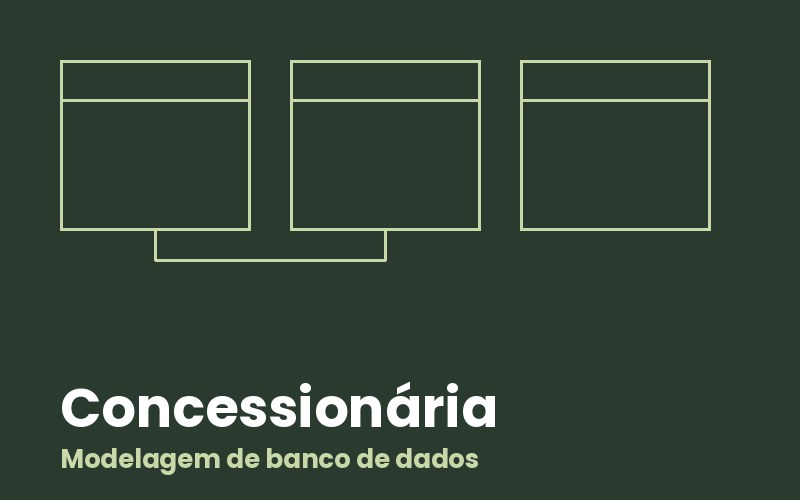

Front-end
- HTML5
- CSS3
- Grid e Flexbox
- JavaScript
Estudante de Análise e Desenvolvimento de Sistemas
Estou construindo minha carreira em tecnologia com foco em desenvolvimento web, modelagem de banco de dados e análise de dados. Gosto de transformar requisitos em sistemas claros e de aprender fazendo projetos reais.
Site para um marketplace de materiais de construção excedentes, com venda e doação.

Projeto de extensão que analisa o gasto de água e energia de uma escola pública em um dashboard no Power BI.

Jogo feito com HTML, CSS e JavaScript e publicado no GitHub Pages.

Modelagem completa: requisitos, diagrama entidade-relacionamento, modelo lógico e script SQL.
Senac Contagem, curso superior em andamento
Disciplinas de front-end, engenharia de software, banco de dados e legislação e ética em TI.
Experiência acadêmica
Análise de dados de consumo de uma escola pública parceira com dashboard em Power BI.
Experiência acadêmica
Levantamento de requisitos, casos de uso, modelagem de banco de dados e desenvolvimento web.